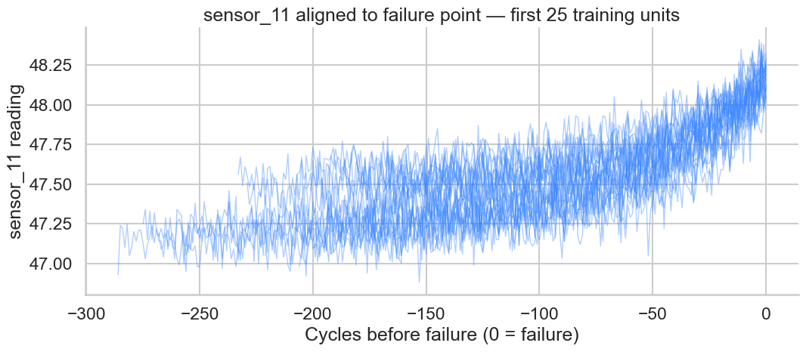
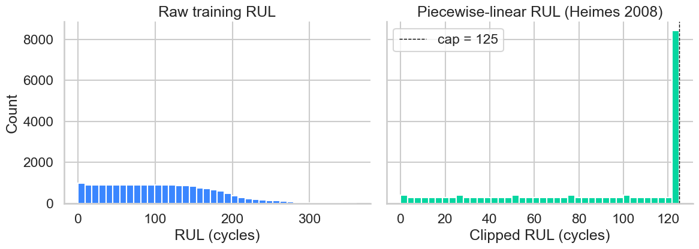
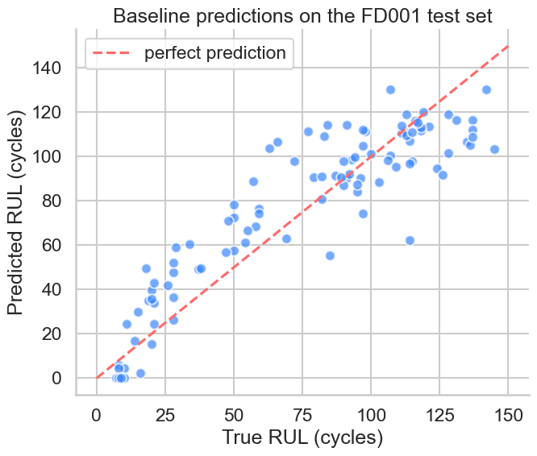
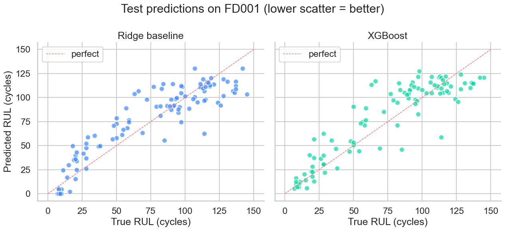
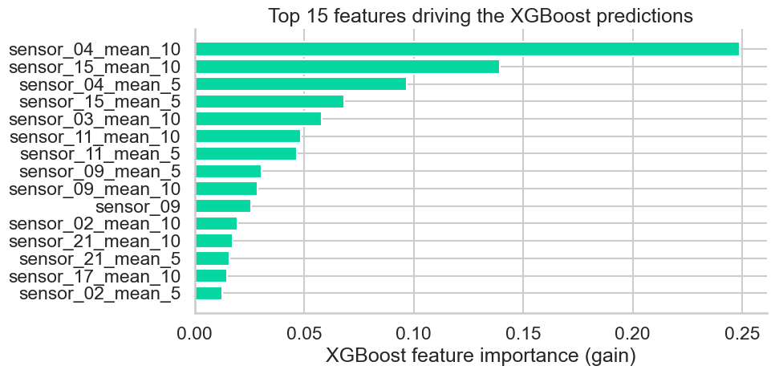

I bridge the gap between raw industrial sensor data and actionable intelligence — designing scalable data pipelines, predictive maintenance models, and AI-powered dashboards for heavy industries.
About Me
I'm a Data Engineer with hands-on experience building end-to-end data pipelines for industrial equipment monitoring and predictive maintenance. My work centers on extracting, contextualizing, and operationalizing sensor data to deliver measurable business impact.
At Hitachi High-Technologies, I contributed to predictive maintenance projects involving time-series sensor analysis, anomaly detection, and ML-driven failure forecasting for precision manufacturing equipment — handling everything from data ingestion design to dashboard delivery.
I'm passionate about bridging the OT/IT gap in heavy industries, and I thrive in environments where data engineering and domain expertise combine to create real-world reliability improvements.
What I Bring
Deep understanding of operational data in precision manufacturing — failure modes, sensor characteristics, and maintenance workflows.
From raw sensor ingestion (REST/Kafka) to data modeling, cleansing, transformation, and visualization — I own the full pipeline.
Building ML models and AI agents that translate data patterns into actionable maintenance decisions, not just dashboards.
CI/CD-first development with Docker, GitHub Actions, and Azure — building solutions that scale beyond the initial pilot.
Technical Skills
Built around the industrial data & AI engineering lifecycle — from edge sensor to executive dashboard.
Experience
Building industrial intelligence through data engineering and predictive analytics.
Featured Project
Open-source implementation
An end-to-end Python pipeline on NASA's CMAPSS turbofan degradation dataset — strict-schema data loader, feature engineering, baseline and gradient-boosted RUL regressors, with executed Jupyter notebooks showing every result.
Results from the executed notebooks
Every figure below is rendered straight from the executed notebook in the repository — click any card to open the full notebook on GitHub.

25 training units, sensor 11 plotted vs. cycles before failure. Clean monotonic drift in the last ~80 cycles motivates the piecewise-linear RUL relabelling.

Capping the regression target at 125 cycles concentrates model capacity on the regime where degradation is observable. Heimes (2008) convention.

Standard-scaled L2 regression on rolling features. Sets the floor that any non-linear model must clearly beat to justify its complexity.

Tuned XGBoost edges out Ridge on RMSE but loses on the asymmetric S-score. The honest result: FD001's single regime is exactly where linear features compete with trees.

Rolling statistics on high-pressure-compressor sensors dominate — exactly the channels whose drift was visible in the EDA notebook.
Coming next
Operating-regime clustering, regime-aware normalisation, and an LSTM sequence model over full trajectories — the setting where XGBoost is expected to clearly win.
Track progress on GitHub →Interactive concept preview
A self-contained Plotly visualisation of what the same pipeline looks like running against real-time sensor streams. The data is synthetic so the page stays static — for the actual benchmark numbers, see the cards above.
Concept summary
| Sensors | Vibration, Temperature, Pressure |
| Cycles | 300 operating cycles |
| Alert threshold | Health score < 30% |
| Implementation | eastani/predictive-maintenance-cmapss ↗ |
Architecture
End-to-end industrial data flow aligned with Cognite Data Fusion's integration model.
Contact
Open to Data Engineer / Data Scientist opportunities in industrial AI and IIoT platforms. Let's connect.